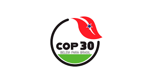
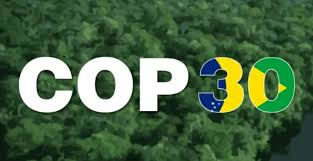

Um marco global na luta pela preservação ambiental e proteção dos biomas brasileiros.
A COP 30 (Conferência das Nações Unidas sobre Mudanças Climáticas) será realizada em Belém, no Pará, reunindo líderes mundiais para discutir ações urgentes contra o aquecimento global. Essa conferência é especialmente importante para o Brasil, pois destaca a relevância dos biomas nacionais — como Amazônia e Cerrado — na regulação climática do planeta.

Embora o evento ocorra na Amazônia, o Cerrado foi amplamente destacado nas pautas ambientais por ser crucial para as águas do Brasil. O bioma abastece 8 das 12 principais bacias hidrográficas nacionais, sendo essencial para o equilíbrio hídrico do país.

Durante a conferência, foram discutidas estratégias para reduzir o desmatamento, restaurar áreas degradadas, apoiar povos tradicionais e incentivar práticas de produção sustentável. O Cerrado recebeu atenção especial por estar entre os biomas mais ameaçados do mundo.
A COP 30 reforçou o papel do Brasil na agenda climática global e destacou a urgência de proteger biomas como o Cerrado, que influenciam diretamente o regime de chuvas, a agricultura e a biodiversidade. A conferência marcou um passo importante rumo a políticas mais fortes de preservação ambiental.